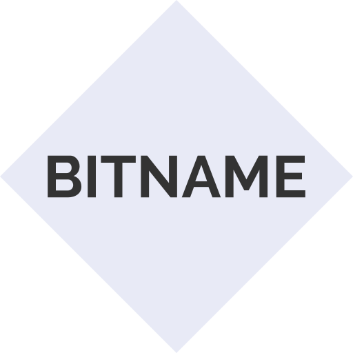

Associate public keys with names on the Bitcoin blockchain


What is this?
Besides being a store of value, Bitcoin is also useful as a distributed database. By embedding certain data in this database, it becomes possible to associate public keys and human-readable names. These pairs are registered for a set length of time, after which they must be renewed or become available to others.
This is a proof-of-concept CLI tool to create and parse this data.
Installation
git clone https://github.com/bitname-protocol/bitname-cli.git
cd bitname-cli
yarn
$ yarn
$ yarn build
$ yarn global add $PWD
npm
$ npm install
$ npm run build
$ npm install -g .
Usage
As of now, the package is unstable. As a result, everything shown below will be done on the testnet.
First, generate a new private key.
$ bitname key-gen -o mykey.wif --testnet
You need to fund the address displayed. The easiest way to get tBTC is a faucet, such as:
- https://testnet.coinfaucet.eu/en/
- https://testnet.manu.backend.hamburg/faucet
- http://tpfaucet.appspot.com/
Once you have some coins, you can start your registration process!
First, pick a service to use. Here, we will use a service with the public key
tp1qqdssqgmu777ddtsn2rv4uuwljy999dkz3zr8n2fwakw7xf4e5d5jg58ykmn
This key is equivalent to the testnet address n4QtQVZF85XXB3rPTkb4B5c8THrp8uMiMb.
Now, let's register a name! We're going to register the name 'bitname' for 60 blocks, or roughly ten hours. And we want to push this transaction to the testnet network.
$ bitname register tp1qqdssqgmu777ddtsn2rv4uuwljy999dkz3zr8n2fwakw7xf4e5d5jg58ykmn bitname 60 -w mykey.wif --push
This will print the transaction id of your registration. You can use this to track your registration's progress on a block explorer. Once it's been confirmed, we can see the names currently registered with the service.
$ bitname all-names tp1qqdssqgmu777ddtsn2rv4uuwljy999dkz3zr8n2fwakw7xf4e5d5jg58ykmn
This will output a list of all the names on this service, including yours! Nice!
But wait, what if you don't like or need that name anymore? Well, you can revoke it. The way registration works, half of your funds are instantly sent to the service, but the other half aren't valid until it expires. Before that, you can reclaim that half.
$ bitname revoke tp1qqdssqgmu777ddtsn2rv4uuwljy999dkz3zr8n2fwakw7xf4e5d5jg58ykmn <txid> -w mykey.wif --push
Fill in your own registration's txid, and bam, you've got half your money back.
I'm a developer, can I use this in my app?
Sure thing! Read our handy-dandy API docs.
Tell me more!
Glad you asked! For a more technical summary, check out the protocol specification.
Future plans
- SegWit support to remove transaction malleability
- A switch to the open Electrum protocol instead of relying on a proprietary, rate-limited API
- Fixing a potential DoS attack vector (see the spec for a better description)
Contributing
Please see the code of conduct and contributor guidelines.
Disclosure Policy
Please do not contact any contributors privately to disclose a bug. Make an issue so that this is immediately brought to light.
Technologies Used
- Typescript
- bcoin for Bitcoin functionality
- BlockCypher's excellent REST API
- jest for testing
- chalk for pretty colors